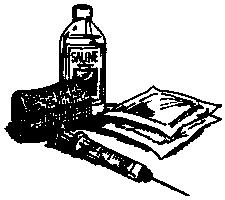

1. Control hemorrhage with persistent pressure.
2. Flush, flush, flush with dilute disinfectant, saline solution or water.
3. Debride (trim away) dead tissue.
4. Suture the wound closed or leave it open and apply bandages.
5. Apply hot packs or hydrotherapy to open wounds.
6. Use a compression bandage to protect the wound and prevent swelling.
7. Administer antibiotics.
• The best type of penicillin for domestic animals is Penicillin G Procaine, since it can be given by intramuscular injection and only needs to be given twice a day.
• It comes in a 100 or 250 ml vial that must be refrigerated.
• There are 300,000 units of penicillin in each ml.
• The dose for all animals is 10,000 units per pound, twice a day.
A 1,000-pound horse will need 1,000 x 10,000 units/lb., or 10 million units total. At 300,000 units/ml, this comes to about 33 ml. A 100-pound calf will need 3.3 ml, while a 50-pound dog will need 1.65 ml and a 10-pound cat will need .33 ml.
1. Shake the bottle thoroughly until all consolidated material is dissolved.
2. Draw up the desired amount using a 16- or 18-gauge needle and an appropriate size syringe. Take the needle off the syringe. Large animals should be injected on the side of the neck (in the muscle) or in the gluteal muscles. These injections should be alternated on a daily basis to avoid bruising and soreness.
3. Slap the skin a few times to desensitize it. Then, using your thumb and index finger, quickly poke the needle in (without the syringe) up to the hub.
4. Quickly attach the syringe to the needle, draw back slightly to make sure you are not in a blood vessel and inject the penicillin. You should not inject more than 20 ml in one spot.
5. Use a new needle for each injection, but reuse the syringe on the same animal if the syringe is refrigerated with the antibiotic.
NOTE:When dealing with any large animal, there is a risk to the person administering the injection. Do not stand behind the beast, and take care that you don't injure yourself with the needle. This technique can be used with cattle, sheep, goats, pigs or llamas. In small animals, the penicillin can be given subcutaneously, similar to a vaccination. Use a 20- or 22-gauge needle (a separate, larger needle should be used to draw it up). A new needle and syringe should be used for each injection.
|
 |
|
|